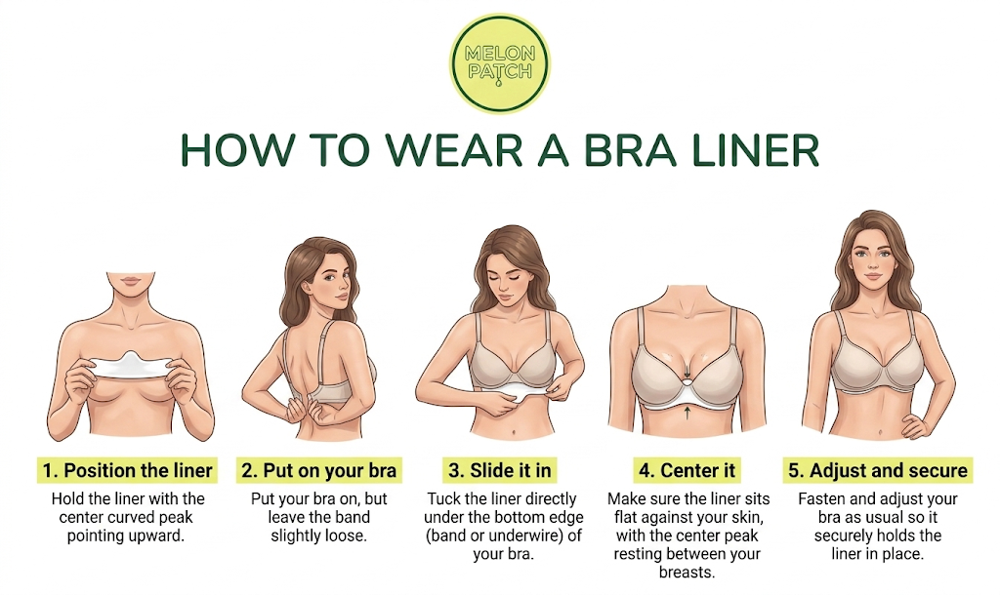

An Intimate Evolution
Welcome and thank you for participating in the Melon Patch pilot. We hope you enjoy the experience, and we would value your perspective.
How to wear your liner

01. Position
Hold the liner with the center curved peak pointing upward.
02. Prepare
Put your bra on as usual, keeping the band slightly loose.
03. Insert
Tuck the liner directly under the bottom edge or underwire of your bra band.
04. Center
Ensure the liner sits flat against your skin with the peak resting between the breasts.
05. Secure
Fasten and adjust your bra so it securely holds the liner in place.
Your Feedback
Your insight is essential as we refine the closest layers of comfort for our launch.
Share My Experience